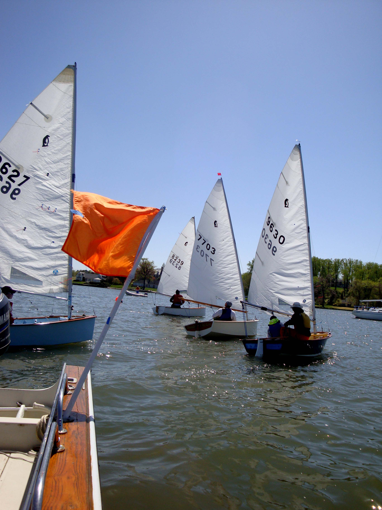

April 10,2010
Gibson Island
It was GIYS' pleasure to host the Penguins. Nxt fall we may add the 210's
just to amplify the fun. Beecie and I were on the start boat and Terry was
on the RIB. Results as follows:
7 races 2 x around WL courses 16-20 minutes to sail No throwouts
9630 9 pts = 2 2 1 1 1 1 1 Rock Hopper (Charlie Krafft & Donna McKenzie)
8239 16 pst = 1 1 5(DNF) 3 2 2 2 Powder Monkey (Jim Alman)
9627 23 pts = 3 4 2 4 4 3 3 Zoom Zoom ( Read & Read Beigel)
7703 24 pts = 5 (DNF) 3 3 2 3 4 4 Thunder Chicken (Scott Williamson)
Wind 280-310 9 - 15 kts
A good day was had by all Lots of silver passed out!
Beecie will send photos
Stay in touch
Tony Kupersmith
